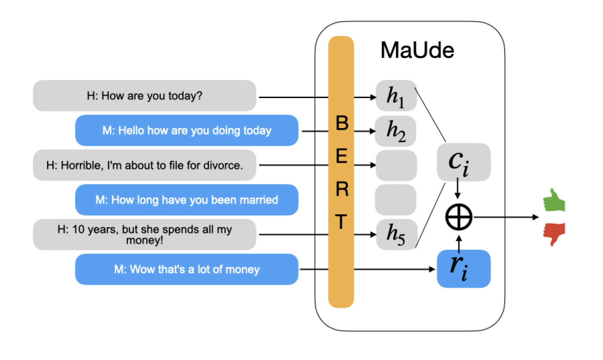
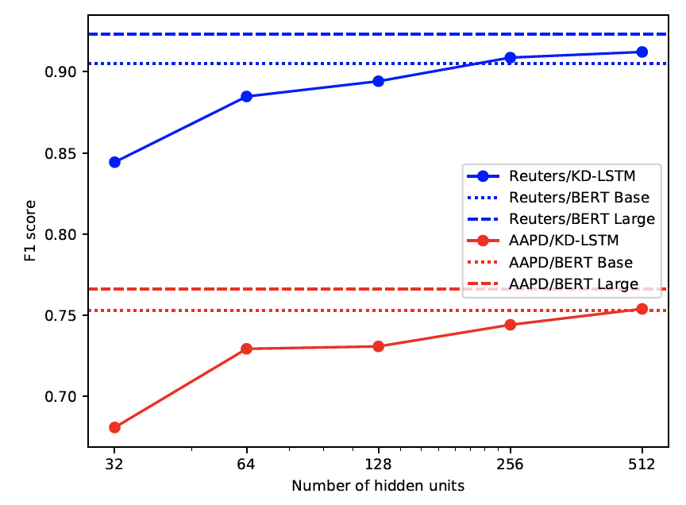
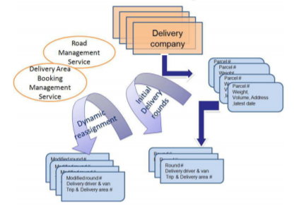

Tao Xu

- Email:daridtao@gmail.com
- School of Software and Microelectronics
- Northwestern Polytechnical University
ACADEMIC POSITIONS
- Assoiate Professor 07/2018-Present
Northwestern Polytechnical University - Assistant Professor 02/2017-02/2018
Northwestern Polytechnical University - Visiting Scholar 09/2002-07/2006
Rensselaer Polytechnic Institute && Augusta Univ(USA) - Visiting Scientist 09/2015-10/2015
National ICT Australia
EDUCATION
- PhD. in Computer Science 09/2009-12/2013
Ecole Centrale de Lyon (France)
Laboratoire d'InfoRmatique en Image et Systèmes d'information - M.E. in Software Engineering 09/2006-07/2009
Xi’an Jiaotong University
Institution of Artificial Intelligence and Robotic - B.E. in Automation 09/2002-07/2006
Xi’an Jiaotong University
RESEARCH INTERESTS
Ubiquitous Computing, signal processing, deep learning methods and their applications particularly in:- Heath care in Ambient Intelligent including fall prediction and detection, activity recognition, abnormal detection, etc.
- EEG data analysis and BCI design including emotion detection, confusion detection, etc.
- MRI image processing including image encoding and reconstruction by deep learning.
GRANTS
- Fund of National Natural Science Foundation of China (PI)
Research of Stay-At-Home Elders Fall Prediction Based on Human Biomechanics Equilibrium and Skeleton Joints Data. -
Open fund of State Key Laboratory (PI)
Research on Key Techniques of Perception Abnormal Behavior of Elderly Based on Intelligent Home Robots.
TEACHING EXPERIENCE
-
C++ programming language, Deep Learning in Python
Undergraduate Course
-
Cloud Computing
Graduate Course
2020
|
|
Decode Brain System: A Dynamic Adaptive Convolutional Quorum Voting Approach for Variable-Length EEG Data
T Xu, Y Zhou, Z Hou, W Zhang Complexity . 2020. |
2019
|
|
Beyond engagement: an EEG-based methodology for assessing user’s confusion in an educational game
Y Zhou, T Xu, S Li, R Shi Universal Access in the Information Society 18 (3), 551-563 |
|
|
Guess or Not? A Brain-Computer Interface Using EEG Signals for Revealing the Secret behind Scores
T Xu, Y Zhou, Y Wang, Z Zhao, S Li Extended Abstracts of the 2019 CHI Conference on Human Factors in Computing … |
2018
|
|
Confusion State Induction and EEG-based Detection in Learning |
|
|
Analyzing Impact Factors for Smartphone Sharing Decisions Using Decision Tree |

|
Learning in doing: a model of design and assessment for using new interaction in educational game |
|
|
A Synergized Pulsing-Imaging Network (SPIN) |
|
|
New Advances and Challenges of Fall Detection Systems: A Survey |
|
|
Elders’ fall detection based on biometrics features by the depth camera |

|
Promoting knowledge construction: a model for using virtual reality interaction to enhance learning |
|
|
Learning emotions EEG-based recognition and brain activity: A survey study on BCI for intelligent tutoring system |

|
User attitudes and behaviors toward personalized control of privacy settings on smartphones |
2017
|
|
Users’ perceived control, trust and expectation on privacy settings of smartphone |
|
|
Monitoring cognitive workload in online videos learning through an EEG-based brain-computer interface |
|
|
Fall Detection Based on Skeleton Data |
|
|
Fall prediction based on biomechanics equilibrium using Kinect |
|
|
Control yourself: on user control of privacy settings using personalization and privacy panel on smartphones |
2016
|
|
Interaction on-the-go: a fine-grained exploration on wearable PROCAM interfaces and gestures in mobile situations |
|
|
AtHoCare: An intelligent elder care at home system |
|
|
Access control is not enough: how owner and guest set limits to protect privacy when sharing smartphone |
|

|
A Smart Brain: an Intelligence Context Inference Engine for Context-aware Middleware |
2015
|
|
iCare: An Interface Design Model for Remote Communicating and Monitoring of Children Care |
2014
|
|
Where is mobile projection interaction going? the past, present and future of the mobile projected interface |
|
|
Innovative wearable interfaces: an exploratory analysis of paper-based interfaces with camera-glasses device unit |
|

|
Direct migrator: Eliminating borders between personal mobile devices and pervasive displays |
2013
|
|
A Context-Aware Middleware for Interaction Device Deployment in AmIA Context-Aware Middleware for Interaction Device Deployment in AmI |
|
|
Proxemic interaction applied to public screen in lab |
|
|
The context-aware middleware in ambient intelligence |

|
Supporting Activity Context Recognition in Context-aware Middleware |
|
|
User-oriented system for smart city approaches |
2012
|
|
SMART-CITY: Problematics, techniques and case studies |
2011
|

|
A Context-aware Middleware for Ambient Intelligence |
|
|
Mobile user interfaces and their utilization in a Smart City |